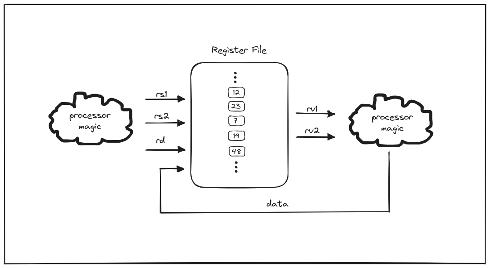
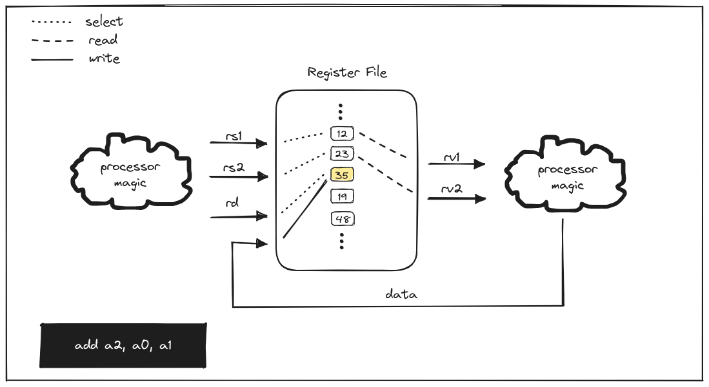
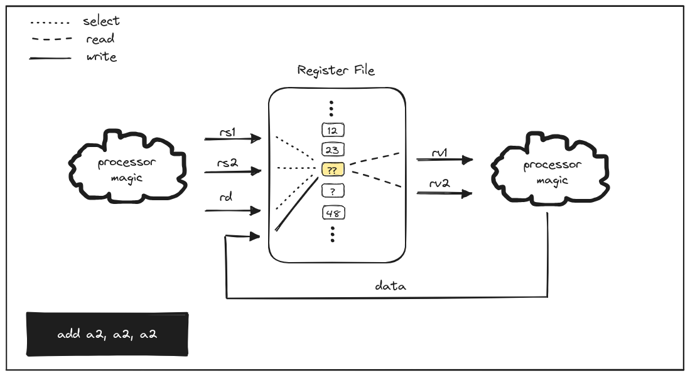
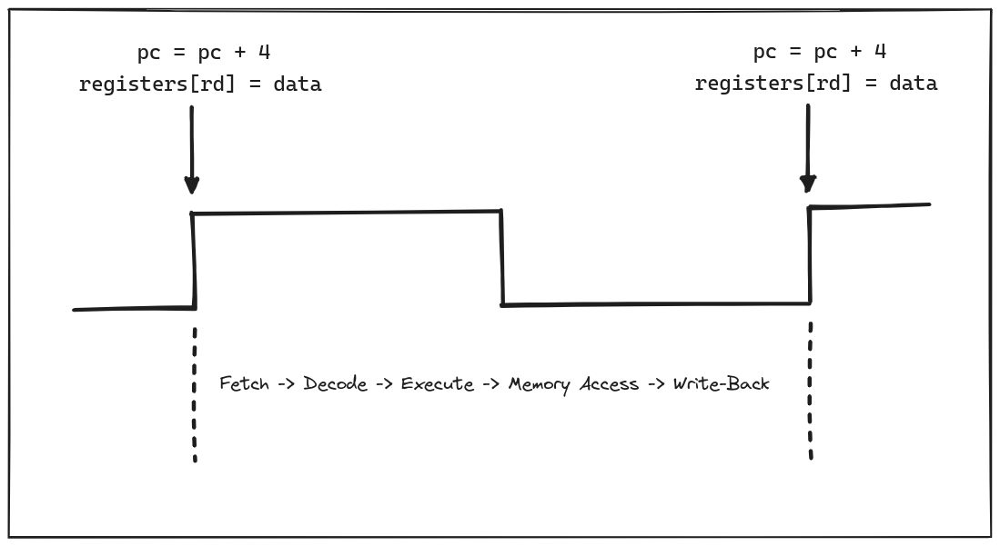

It’s a simple question really: how can you read and write to the same register in a single-cycle processor? If you have spent most of your life working with software, it is tempting to think of all events as happening sequentially. However, that sequential model that we have become so familiar with as software engineers is really an abstraction that hardware offers to us to help our simple brains reason about logic. In reality, the physical world is continuous, and processors are the component that allow us to interact with it using sequential operations.
In the memory hierarchy of machines, the fastest memory that lives closest to
the processor are the registers. The component within the processor that
controls reading and writing to this memory is commonly referred to as the
register file. In previous posts, we outlined why moss is based on the
64-bit RISC-V integer
instruction set (RV64I),
and also made the decision to initially use a single-cycle
implementation
for the processor. All RISC-V architectures use 32 general purpose registers
(GPRs), but the size of each register depends on the width of the architecture
(referred to as XLEN is RISC-V parlance), which in our case 64 bits. Let’s
take a look at the moss register file as of
today:
module regfile(
input clk,
input write_ctrl,
input [4:0] rs1,
input [4:0] rs2,
input [4:0] rd,
input [63:0] data,
output [63:0] rv1,
output [63:0] rv2
);
reg [63:0] registers [31:0];
assign rv1 = registers[rs1];
assign rv2 = registers[rs2];
always @(posedge clk) begin
if (write_ctrl)
begin
registers[rd] <= data;
end
end
endmodule
As one of the simpler components in a processor, the moss register file
consists of just a few inputs and outputs, and the internal logic is fairly
minimal. The registers declaration matches the assertion that 32 64-bit
registers are implemented.
reg [63:0] registers [31:0];
The following statements ensure that the outputs, rv1 and rv2 (i.e.
“register value 1”, “register value 2”), are continuously assigned the values of
the registers specified by the rs1 and rs2 (i.e. “register source 1”,
“register source 2”) inputs.
assign rv1 = registers[rs1];
assign rv2 = registers[rs2];
So far, we haven’t encountered any sequential operations. We only have a circuit
that changes its output in response to changes of input. However, the next block
introduces a procedural block (always) with a sensitivity list containing a
single trigger on the positive edge of the clock signal (posedge clk).
always @(posedge clk) begin
if (write_ctrl)
begin
registers[rd] <= data;
end
end
Logic wrapped in this block will only be evaluated on positive transitions (i.e.
low to high) of the clock signal. In this case, the logic states that if
write_ctrl is high, we write the contents of the data input, a 64-bit value,
to the register specified by rd (i.e. “register destination”).
In our last post, we talked about the classic 5 stages of executing an instruction in a processor:
- Fetch
- Decode
- Execute
- Memory Access
- Write-Back
The register file is involved in Execute (3) and Write-Back (5), though not all
instructions require (5). In the integer instruction set, there are six formats
defined:
R, I, S, B, U, and J. Today we’ll focus on R as it is the only
format that includes instructions that make use of rs1, rs2, and rd (i.e.
they read from two source registers and write to one destination). Specifically,
we’ll only use the ADD instruction. Consider the following sequence:
add a2, a0, a1
add a3, a0, a2
add a2, a2, a2
The first instruction will add the value in the a0 register to the value in
the a1 register and store it in a2. In a vacuum, one could reasonably assume
that this can happen in a single cycle, even without sequential logic. For a
moment, let’s pretend our register file logic looked like the following:
reg [63:0] registers [31:0];
assign rv1 = registers[rs1];
assign rv2 = registers[rs2];
assign registers[rd] = data;
There is no longer a clock or write control signal involved, and everything is assigned continuously.
It is important to remember that the order of continuous assignments in Verilog are inconsequential. We are designing a circuit, not writing a program.
For the sake of illustration, we’ll start with our registers populated with arbitrary values.

For the first instruction, the inputs and outputs would be what we expect
because there is a stable state that can be reached. The inputs specified by the
instruction (rs1, rs2, rd) are constant and independent. That is, the
instruction is not changing and the registers specified (a0, a1, a2) are
all different. Though the data input will change based on the values read from
the a0 and a1 registers, it will eventually be written to a2, at which point
there will be no further state changes.

However, when we move to the second instruction, rs2 and rd change, and the
continuous assignment of data to the register specified by rd will cause a
race between the following operations:
- The value of
databeing written toa2(previousrd) - The value of
databeing updated to reflect the sum of the values ofa0anda2(previousrs1andrs2) - The value of
databeing written toa3(newrd)
Depending on which of these occurs first, the final state may differ. For
example, if data, which is calculated outside of the register file, is also
being continuously assigned, some intermediate value could be written to a2,
and that could change the value read from a2, which could also change the
value written to a3. This results in an unpredictable stable state.
This conundrum is even more apparent with the third instruction, as a2 is used
as both source registers and the destination. This results in a circuit that
would never be stable. Reading from a2 and calculating the sum of its value
with itself results in updating the data, which results in writing a new value
to a2, and so on; a stable state will never be reached. This is known as a
combinational loop.

Simulation of the logic using Verilator can be seen in the following waveform.
The values of rv1, rv2, and a2 (registers(2)) are changing on every
evaluation step, all within the same clock cycle. Or said another way, the
values at the end of the clock cycle are not deterministic.
Edge-Triggered Flip-Flops to the Rescue Link to heading
Fortunately, we do not continuously assign the data value to the register
specified by rd. Instead, our procedural block makes use of edge-triggered
logic to only evaluate whether write-back should occur, and, if so, perform it,
when the clock changes from low to high. This is typically implemented via D
flip-flop
circuits.
But the original question still remains: how can you read and write to the same
register in a single-cycle processor? rv1 and rv2 are still continuously
assigned, so changing the values in the registers referred to by rs1 and rs2
will result in rv1 and rv2 also being updated. However, though the data
value is calculated within the cycle in which the instruction is executed, it
only gets written when the clock goes from low to high. Therefore, on the rising
edge of the next instruction’s clock cycle, the edge-triggered logic will result
in data being written to the register referred to by rd from the previous
instruction (assuming the instruction requires write-back), and further writes
will not be able to be performed until the next rising edge.
It is helpful to remember that the register file is just one component of the larger processor. When the clock cycle starts for a new instruction, we still have to fetch and decode it, which won’t happen until the program counter is incremented, which also is implemented using edge-triggered logic.

Between one rising edge and the next, the state of wires may be changing frequently, which is the part we don’t see when we write software. As long as values become stable within the duration of a clock cycle, it appears as though we have a sequential machine. Whether a given circuit that will become stable does become stable within the duration is another complex topic, and we’ll dive deeper into timing constraints in a future post.